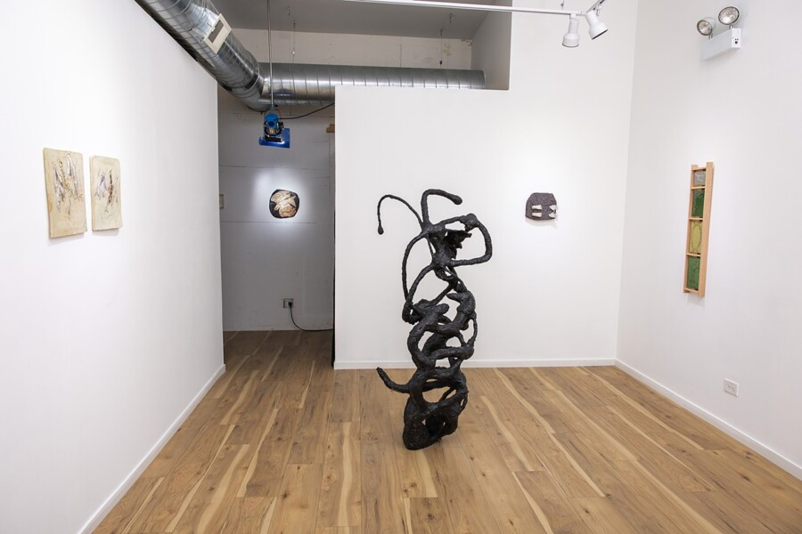

After We Let Go: Closing Reception
crosswalk proudly presents, After we let go, a two person show with Adehle Daley & Tatiana Sky.
The exhibition will run through 5.29.26 with a closing reception from 6-9pm, including a performance piece by Adehle Daley & Tatiana Sky at 8pm.
After We Let Go, is an exhibit exploring the working relationship between artists Adehle Daley &
Tatiana Sky. Sowed in harmony, After we let go, highlights work from both artists individually and showcases a collaborated piece to which encourages the viewer to participate. Together,
Daley and Sky explore the intertwining relationship between the natural world and the transcendence of the collective spirit.